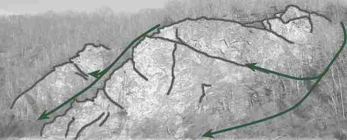

Hauteur max: 34m
Exposition: Ouest
Rocher: Gneiss micachiste quartzite
Météorologie:
En hiver, il est préférable de grimper l'après-midi quand le rocher est sec. En été, il vaut mieux grimper le matin ou le soir lorsque le rocher est à l'ombre.
Equipement en place:
Broches Brouet-Badré (cosiroc) - Colles C100 Hilti et Sikadur 31.
Toutes les voies sont équipées de 2 broches aux relais. Le secteur initiation, en bas à droite, est équipé de broches reliées par une chaine aux relais.
Particularités:
Une vire ascendant partage la majorité de la falaise. Les voies de la partie inférieure sont équipées de relais au niveau de la vire. Les voies de la partie supérieure se terminent en haut de la falaise. Les déplacements sur la vire demandent de la vigilance, en particulier dans la partie supérieure.
Matériel conseillé:
Corde de 70m et 12 à 14 dégaines pour les grandes voies.
Rocher: Gneiss micachiste quartzite
Météorologie:
En hiver, il est préférable de grimper l'après-midi quand le rocher est sec. En été, il vaut mieux grimper le matin ou le soir lorsque le rocher est à l'ombre.
Equipement en place:
Broches Brouet-Badré (cosiroc) - Colles C100 Hilti et Sikadur 31.
Toutes les voies sont équipées de 2 broches aux relais. Le secteur initiation, en bas à droite, est équipé de broches reliées par une chaine aux relais.
Particularités:
Une vire ascendant partage la majorité de la falaise. Les voies de la partie inférieure sont équipées de relais au niveau de la vire. Les voies de la partie supérieure se terminent en haut de la falaise. Les déplacements sur la vire demandent de la vigilance, en particulier dans la partie supérieure.
Matériel conseillé:
Corde de 70m et 12 à 14 dégaines pour les grandes voies.
Secteur de gauche
12 voies (Initiation - 6c)
Secteur du grand dièdre
17 voies (Initiation - 6b)
Secteur de la vire
12 voies (Initiation - 7b+)